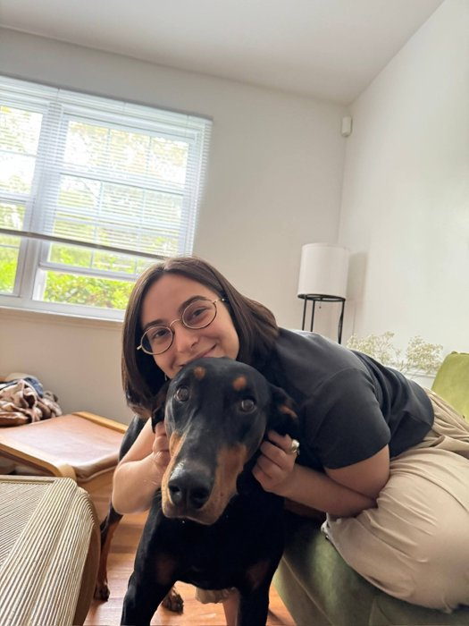
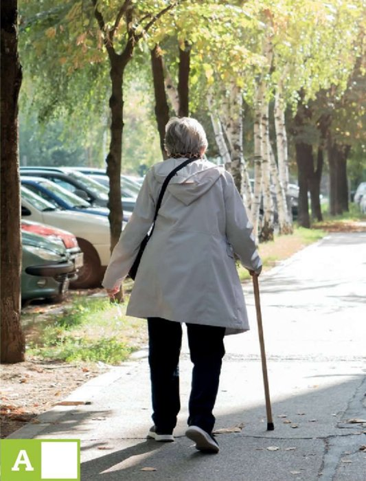
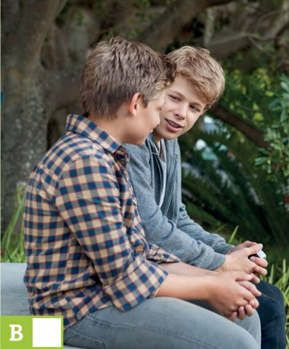
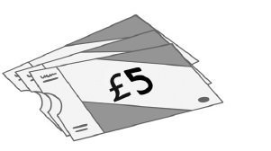
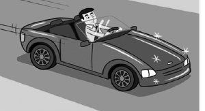
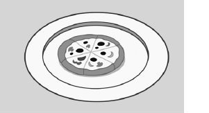
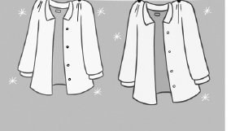

The last lesson of Unit 1: ask questions about a photo, watch Becky’s vlog, learn to wait and be patient — and then the Unit 1 test.
| Warm-up | 10 min | He asks you questions about your photo → he shows his picture, you ask him |
| Being patient | 20–25 min | TB Warmer → vlog Ex. 1–2 → Ex. 3 dialogues → Ex. 4 speaking + tips → Activity idea |
| Unit 1 Test | 25–30 min | Standard test, 10 tasks, 80 points. No Check buttons — use Show right / wrong here. |
| Extras | if time | Hidden: Worksheet tab (Life Lessons: Being patient) and Master it! tab (Practice Extra). Open them with the violet bar. |
| Homework | Patience diary (TB Homework) — visible tab. |
Задавай вопросы учителю о фото: кто это, где это, какого цвета… Используй слова-подсказки.

Покажи учителю свою картинку. Учитель задаёт вопросы — ты отвечаешь. Потом расскажи о ней сам.
Sometimes we are excited about something. We want it to happen now. But we need to wait and be patient.
NAME – Becky
AGE –
NATIONALITY –
FROM –
FAVOURITE SINGER –
FAVOURITE COLOUR –
BEST FRIEND –
Сначала попробуй по памяти, потом посмотри ещё раз и проверь.
1. There is a party
2. A trip to have pizza is
3. Becky’s birthday is
У тебя одна минута! Не нужно понимать каждое слово.
Hi, Mario.
MarioOh, hi Ollie. I’m excited. Very excited.
OllieExcited? Why?
MarioIt’s the big football game tonight.
OllieWhen is it?
MarioEight o’clock. I can’t wait.
OllieThat’s only three more hours.
MarioI know, but I can’t wait!
Look. This lady in front of us is very slow!
SaraAnd? What’s the problem?
IsaWhy is she so slow? I want to get to the cinema!
SaraWe have lots of time before our film starts.
IsaYes! And?
SaraThere’s lots of time, Isa. Be patient! She’s an old lady.

Photo A →

Photo B →
It’s difficult to wait …
Отметь всё, что уже получается!
| Countries | Nationalities |
|---|---|
| Brazilian | |
| Japan | |
| Mexican | |
| Sudan | |
| the US |
1. is a beautiful country.
2. Yildiz is from .
3. Tom is . He’s from Birmingham.
4. I’m from Moscow. I’m .
5. Alfonso is from .




1. old is he?
2. is blue your favourite colour?
3. is your favourite pop star?
4. is your favourite colour?
5. is your name?
1. am Martin.
2. is an old car.
3. Fernanda and I are from Rio de Janeiro. are Brazilian.
4. Billie Eilish is great. ’s my favourite singer.
5. are my friend.
1. You brothers.
2. I 25.
3. It dirty but new.
4. We friends.
5. They Mexican.
1. You is 18. →
2. She am a tennis player. →
3. They is from Istanbul. →
4. We American. →
5. The bus slow. →
Hi! I’m Brad. I’m from New York.
BHi Brad!
AWhat’s your ?
BI’m Leo. I’m from Spain.
AAwesome! city are you from?
BSeville.
ASeville’s a city.
B, it is.
ANice to you, Leo!
1. A Who’s that? B
2. A Where’s she from? B
3. A Berlin’s a beautiful city. B
4. A Who’s your favourite singer? B
5. A Nice to meet you. B
1. How old is Becky?
2. What’s her nationality?
3. Where is she from?
4. Who is her favourite singer?
5. What’s her favourite colour?
6. Who is her best friend?
Becky’s vlog is all about .
1. Tomorrow evening
2. On Saturday
3. Next week !
4. Now .
1. You want to speak to your mum about something important, but she’s on the phone to her best friend.
2. Your friend is meeting you at a café. She’s already 20 minutes late.
3. You’re going to a concert. You’re on the bus and you’re stuck in traffic.
4. You’re walking with your grandmother in the park. She walks very slowly. It’s going to rain.
1. He’s from Italy. He’s .
2. She’s from Spain. She’s .
3. We’re from China. We’re .
4. They’re from France. They’re .
5. I’m from Germany. I’m .
6. Becky is from the UK. She’s .
1. A Hi, Sam! How’s it going? B
2. A Look! My new bike. B
3. A The game is at eight. B
4. A Bye, Anna! B
5. A Hurry up! The bus is late. B
2–3 дня записывай: когда тебе пришлось ждать? Ты был терпеливым? Если нет — что можно сделать в следующий раз?
Day 1
Day 2
Day 3